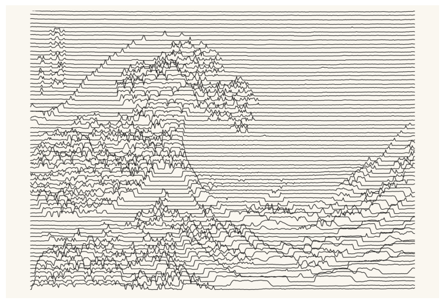
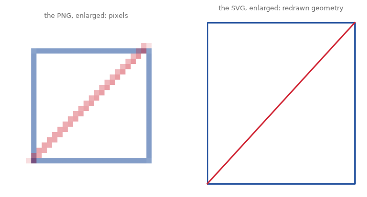
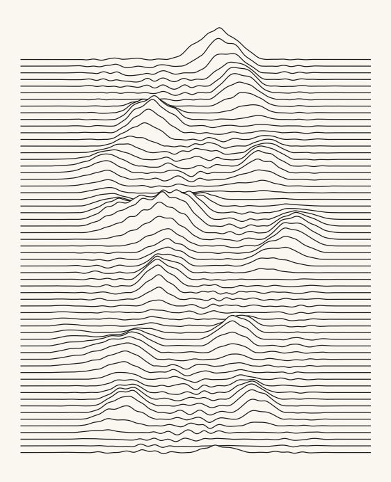
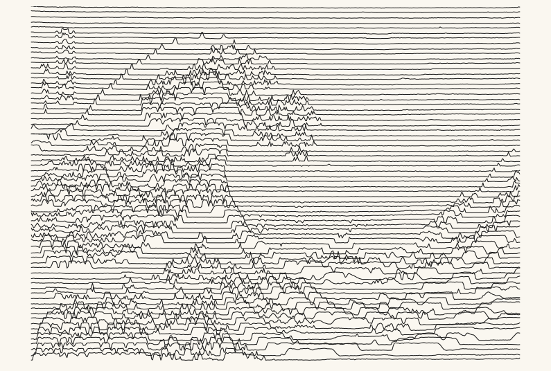
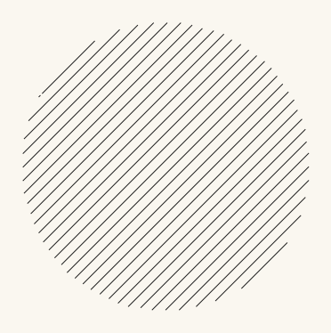
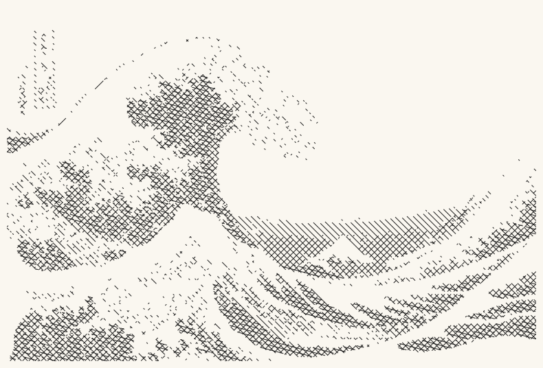
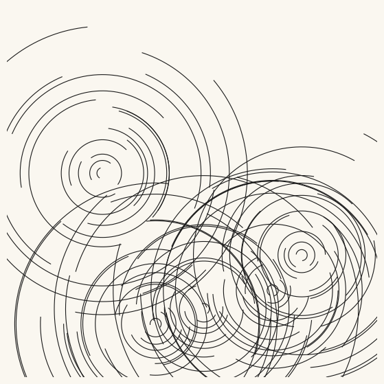
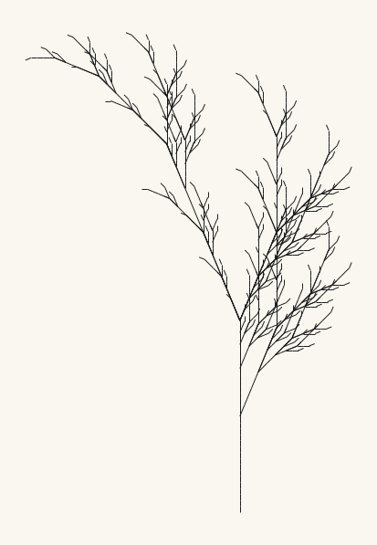
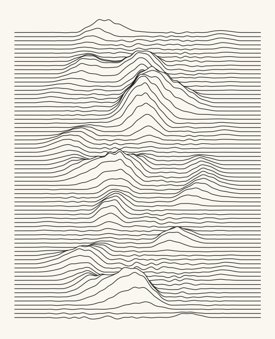

26. The Plotted Line: Vector Graphics and the Machine’s Hand#
Every image in this book so far has been a grid of pixels; today an image becomes a set of instructions for a moving pen. We meet vector graphics (Vektorgrafik), displace fields of lines with noise and with a painting, hatch tone out of pure strokes, and leave with files a pen plotter could draw in ink.
Today’s destination#
Hokusai’s great wave, drawn with nothing but seventy horizontal lines. No fills, no grays, no pixels: each line simply rises wherever the print beneath it is dark, and the wave assembles itself out of the disturbance. The picture belongs to a lineage that runs from the plotter drawings of the 1960s to a radio astronomer’s 1970 thesis figure that became one of the most famous album covers ever printed, and it comes with a companion file, an SVG, that is not a picture of the drawing but the drawing’s instructions: hand them to a machine with a pen and it will perform them on paper. By the end of today, every line-based artwork you have made this book becomes plottable.
# display this chapter's showpiece (generated by the last cell of this notebook)
import os
import matplotlib.pyplot as plt
import matplotlib.image as mpimg
showpiece_path = "../assets/outputs/ch26_showpiece.png"
if os.path.exists(showpiece_path):
image = mpimg.imread(showpiece_path)
plt.figure(figsize=(9.5, 6.5))
plt.imshow(image)
plt.axis("off")
plt.show()
else:
print("Not generated yet -- run the whole notebook once and come back.")

Context: the machine’s hand#
This chapter gives the book’s earliest heroes their machine back. From 1959 Vera Molnár generated drawings by following strict rules by hand, a method she called her machine imaginaire (you met it in chapter 1); in 1968 she gained access to a computer at a Paris university research lab and became one of the first artists to draw with a computer-driven pen plotter, the imaginary machine made real (Molnár 1975; Williams 2023). Her (Dés)Ordres series of the mid-1970s perturbs grids of concentric squares with controlled randomness, its title punning on French disorders and orders (Victoria and Albert Museum, collection entry). Three years before her, in September 1965 (the drawing’s title records its date), Frieder Nake had drawn Hommage à Paul Klee, 13/9/65 Nr.2 with a Zuse Graphomat Z64 flatbed drawing machine executing his program; a screenprint after the plotter drawing is now in the Victoria and Albert Museum. And Harold Cohen, from the late 1960s until his death in 2016, developed the drawing program AARON and built its bodies himself: through the 1970s a wheeled drawing “turtle” and later flatbed machines executed AARON’s compositions in real ink before museum audiences (Whitney Museum of American Art 2024).
The lineage has an accidental masterpiece. In 1970 the radio astronomer Harold D. Craft, Jr. plotted, for his Cornell dissertation, successive radio pulses of the pulsar CP 1919 recorded at the Arecibo Observatory: a program he wrote stacked the pulse traces one above the next on a computer-driven pen plotter, each line hiding the lines behind its peaks so the stack reads as a mountain range of signal (Craft 1970). The band Joy Division found the figure reprinted in The Cambridge Encyclopaedia of Astronomy (1977), and Peter Saville inverted it to white on black for the cover of Unknown Pleasures (1979) (Christiansen 2015). Saville designed the cover, not the plot: the most recognizable album art of its era is, in substance, a scientific pen drawing reproduced whole, and later today we will draw in its dialect.
The pen plotter itself never died; it moved into the living room. Affordable machines, most famously the AxiDraw designed by Evil Mad Scientist Laboratories (its line continues under Bantam Tools, which acquired the company in 2024; Edman 2024), sustain a living community of artists who share generative work drawn in ink on paper. Among them is Jakob Glock, whose open-source plotter scripts, written in Python for exactly this workflow, prompted this chapter (Glock, Generative-Art repository). The community’s core insight is aesthetic, not technical: a plot is a drawing, not a print. A printer deposits an image all at once; a plotter performs it, one continuous stroke at a time, and ink, paper and the pen’s pressure all leave their trace. Working under the plotter’s discipline (strokes only, no fills, every mark a path) turns out to sharpen composition even on screen, and chapter 18’s concentric-ring variant was already obeying it. Every line-based chapter of this book was secretly plottable all along; today we make that explicit.
Raster and vector#
A raster image (every image in this book so far) is a grid of pixel colors: enlarge it and the squares show. A vector image stores the geometry instead: “a line from here to there, this thick”. Enlarging a vector image just redraws the same geometry larger, so it has no resolution at all. The web’s standard vector format is SVG (Scalable Vector Graphics), an XML text format that became a W3C Recommendation in September 2001 (W3C 2001), and matplotlib can save it as easily as PNG: the same savefig call with a different filename ending. Watch both formats meet a magnifying glass:
# the same little drawing as pixels and as geometry
import numpy as np
plt.rcParams["svg.hashsalt"] = "agap" # stable internal ids: re-runs match
fig_tiny, ax = plt.subplots(figsize=(1.2, 1.2))
ax.plot([0.1, 0.9, 0.9, 0.1, 0.1], [0.1, 0.1, 0.9, 0.9, 0.1], color="#1B4B9B")
ax.plot([0.1, 0.9], [0.1, 0.9], color="#D02433")
ax.axis("off")
fig_tiny.savefig("../assets/outputs/ch26_square.png", dpi=26)
fig_tiny.savefig("../assets/outputs/ch26_square.svg")
plt.close(fig_tiny)
from PIL import Image
pixels = np.asarray(Image.open("../assets/outputs/ch26_square.png")) / 255
big = np.kron(pixels[..., :3], np.ones((12, 12, 1))) # chapter 13's enlarger
fig, axes = plt.subplots(1, 2, figsize=(9, 4.5))
axes[0].imshow(big)
axes[0].set_title("the PNG, enlarged: pixels", fontsize=9, color="#6B6B6B")
axes[1].plot([0.1, 0.9, 0.9, 0.1, 0.1], [0.1, 0.1, 0.9, 0.9, 0.1],
color="#1B4B9B", linewidth=2)
axes[1].plot([0.1, 0.9], [0.1, 0.9], color="#D02433", linewidth=2)
axes[1].set_title("the SVG, enlarged: redrawn geometry", fontsize=9,
color="#6B6B6B")
for ax in axes:
ax.axis("off")
plt.show()

# an SVG is text: open the file and read the drawing itself
svg_text = open("../assets/outputs/ch26_square.svg").read()
print(f"the file is {len(svg_text)} characters of plain text; here is one path:")
stroke_at = svg_text.find("line2d") # .find locates a substring
start = svg_text.find("<path", stroke_at) # the first PEN path, not the page fill
print(svg_text[start:start + 380]) # chapter 0's slicing, on a file
the file is 1660 characters of plain text; here is one path:
<path d="M 13.843636 73.872
L 74.716364 73.872
L 74.716364 13.392
L 13.843636 13.392
L 13.843636 73.872
" clip-path="url(#p1818de6cc3)" style="fill: none; stroke: #1b4b9b; stroke-width: 1.5; stroke-linecap: square"/>
</g>
<g id="line2d_2">
<path d="M 13.843636 73.872
L 74.716364 13.392
" clip-path="url(#p1818de6cc3)" style="fill: none; stroke: #d02433; stroke-w
There is the drawing, spelled out: d="M ... L ... L ..." reads move to this point, line to that one, line to the next, which is precisely a list of pen movements. (The flood of decimals is matplotlib being cautious; a hand-written SVG can be ten short lines.) This textuality is the deep link to everything the book has done: an SVG is to a drawing what chapter 7’s L-system string was to a plant, instructions rather than results.
Try it. Open ch26_square.svg from assets/outputs/ in a text editor, change one L coordinate by 20, save, and drag the file into a browser: you have just edited a drawing by editing its instructions.
One catch decides what can be plotted at all. When matplotlib saves SVG, line art (plot, LineCollection, unfilled patches) stays vector, but imshow embeds a bitmap: a pixel image travels along inside the file as freight, and no pen can draw it. So the plottable chapters are the line-based ones: chapter 1’s walks, chapter 3’s rosettes, chapter 7’s plants, chapter 10’s flow trails, chapter 18’s ring variant, chapter 19’s long exposure, chapter 23’s biomorphs. The pixel chapters (fractals, automata, everything imshow) can visit paper only through a translation such as hatching, which we build below.
The plottable discipline, in three rules. Strokes only: a pen has no “fill”, so a solid area must be woven from strokes (hatching). One pen, one width: thickness on paper comes from the physical pen, not a parameter. Economy: every centimeter of line is seconds of machine time and ink laid down, so pen travel is a budget, and composing under it is a pleasure of the form.
The ridge field#
Our first plot speaks Craft’s dialect directly: a stack of horizontal polylines, each displaced upward by a signal, each hiding whatever runs behind its peaks. The signal is chapter 10’s opensimplex noise in two octaves (noise layers in chapter 10’s sense of the word, borrowed from music because each layer doubles in detail; chapter 25’s musical octave is the same doubling, heard): a broad swell, sharpened by a small power so peaks stand out of calm plains, plus fine roughness scaled by the swell’s strength (quietest where the swell dies away). An envelope fades the displacement toward the left and right margins, which is what gives such plots their mountain-range-on-a-page look. The hiding is one line of numpy: keep a running skyline of the highest ink so far, and let each farther line show only where it rises above it (np.where with np.nan gaps, chapter 10’s broken-polyline trick).
# tools for the plotted half of the chapter
import sys
sys.path.append("..")
from agap.helpers import PAPER, save_artwork
import opensimplex
# the ridge field: stacked, displaced, hidden-line-removed
def ridge_field(seed, n_lines=60, amplitude=18, spacing=1.6, figsize=7):
opensimplex.seed(seed)
x = np.linspace(0, 100, 500)
envelope = np.clip(1 - ((x - 50) / 42)**2, 0, 1)**1.5
fig, ax = plt.subplots(figsize=(figsize, figsize * 1.25))
fig.patch.set_facecolor(PAPER)
ax.set_facecolor(PAPER)
skyline = np.full(len(x), -1e9) # highest ink so far, per column
for i in range(n_lines): # front (bottom) to back (top)
# two octaves (chapter 10): 0.045 is the broad swell, 0.35 the roughness
swell = opensimplex.noise2array(x * 0.045, np.array([i * 0.13]))[0]
rough = opensimplex.noise2array(x * 0.35, np.array([i * 0.4]))[0]
y = (i * spacing + envelope * (amplitude * np.maximum(swell, 0)**1.6
+ 2.2 * rough * np.abs(swell)))
ax.plot(x, np.where(y > skyline, y, np.nan), color="#1A1A1A",
linewidth=0.9)
skyline = np.maximum(skyline, y)
ax.set_xlim(-4, 104)
ax.axis("off")
plt.show()
return fig
art_ridge = ridge_field(seed=21)

Every choice here is a plotter choice: one ink, one width, and the drama carried entirely by where lines refuse to be straight. The hiding matters more than it seems; comment out the skyline update at home and the stack collapses into spaghetti, because overlapping strokes no longer imply depth.
Try it. Change the seed for new mountains. Then raise amplitude to 35: the peaks start swallowing whole lines, and somewhere past that the page tips from landscape into pure interference.
The image as displacement#
The ridge field displaced its lines with noise. Displace them with a picture instead and the picture reappears, performed by the lines: exactly what Craft’s plot did (radio intensity displacing each trace) and what we now do to Hokusai (Metropolitan Museum of Art, collection entry). We load the print small and in grayscale (chapter 16’s luminance move), and each of seventy horizontal lines rises in proportion to the darkness directly beneath it. These displaced lines, and the crosshatch a few cells on, are transformations in exactly Part IV’s sense, an image in and a re-represented image out, performed here under the plotter’s stroke discipline.
# Hokusai performed by seventy horizontal lines
from PIL import Image
def displaced_lines(darkness, n_lines=70, amplitude=9, figsize=10):
height, width = darkness.shape
fig, ax = plt.subplots(figsize=(figsize, figsize * height / width))
fig.patch.set_facecolor(PAPER)
ax.set_facecolor(PAPER)
xs = np.arange(width)
for i in range(n_lines):
row = int((i + 0.5) * height / n_lines)
ax.plot(xs, row - darkness[row] * amplitude, color="#1A1A1A",
linewidth=0.75)
ax.set_ylim(height, 0) # image convention: y downward
ax.axis("off")
plt.show()
return fig
wave_image = Image.open("../assets/images/hokusai_wave.jpg")
wave_w = 480
wave_h = int(wave_image.height * wave_w / wave_image.width)
wave_dark = 1 - np.asarray(wave_image.convert("L")
.resize((wave_w, wave_h))) / 255
art_wave = displaced_lines(wave_dark)

Look and compare. The wave, the boats, even Fuji assemble out of pure horizontal strokes; where the print is pale the lines lie flat and the paper does the resting. Squint and it is a picture; look close and it is only disturbance. Which regions survive the translation best, and what do they have in common?
Hatching: tone from strokes#
A pen cannot fill, so plotter artists weave tone from parallel strokes: hatching (Schraffur), the same craft engravers used centuries before machines (Ivins 1953). Two ingredients. The direction of a hatch family comes from chapter 3’s trigonometry: a unit vector \((\cos\theta, \sin\theta)\) along the strokes and its perpendicular for stepping between them. The where is a True/False mask, and we clip each long stroke against it by sampling points along the line and hiding the points that fall outside (np.nan again). (Two vector moves carry the code: multiplying a direction pair by a number stretches a step along it, and adding steps chains them, so center + offset * across + t * along reads “start in the middle, slide sideways to choose the stroke, then walk along it”; swapping the pair and flipping one sign is all it takes to turn a quarter turn.) First, one hatch family through a simple mask:
# hatch a mask with one family of parallel strokes at an angle
def hatch_mask(ax, mask, angle_degrees, spacing, linewidth=0.7):
height, width = mask.shape
theta = np.radians(angle_degrees)
along = np.array([np.cos(theta), np.sin(theta)]) # chapter 3's circle trig
across = np.array([-np.sin(theta), np.cos(theta)])
reach = np.hypot(width, height)
center = np.array([width / 2, height / 2])
t = np.arange(-reach, reach, 1.0)[:, None] # a column: chapter 16's axis-adding trick
for offset in np.arange(-reach, reach, spacing):
points = center + offset * across + t * along
px, py = points[:, 0], points[:, 1]
on_canvas = (px >= 0) & (px < width) & (py >= 0) & (py < height)
keep = np.zeros(len(points), bool)
keep[on_canvas] = mask[py[on_canvas].astype(int), px[on_canvas].astype(int)]
ax.plot(np.where(keep, px, np.nan), np.where(keep, py, np.nan),
color="#1A1A1A", linewidth=linewidth)
grid_x, grid_y = np.meshgrid(np.arange(240), np.arange(240)) # chapter 8's grid
disc = np.hypot(grid_x - 120, grid_y - 120) < 90
fig, ax = plt.subplots(figsize=(4.6, 4.6))
fig.patch.set_facecolor(PAPER)
ax.set_facecolor(PAPER)
hatch_mask(ax, disc, angle_degrees=45, spacing=6)
ax.set_aspect("equal")
ax.axis("off")
plt.show()

A filled circle that contains no fill: only strokes and their refusal to cross a boundary. Now the engraver’s full trick, crosshatching by tone: slice the wave’s darkness into bands (chapter 16’s two-tone thinking, extended to four), and give each darker band one more hatch family at a new angle. Ink accumulates exactly where the print is dark, and tone emerges from pure geometry.
# crosshatch the wave: one more hatch family per band of darkness
bands = [0.25, 0.45, 0.65, 0.85] # darkness thresholds, light to dark
angles = [45, -45, 15, 75] # a new stroke direction per band
fig, ax = plt.subplots(figsize=(10, 10 * wave_h / wave_w))
fig.patch.set_facecolor(PAPER)
ax.set_facecolor(PAPER)
for level, angle in zip(bands, angles):
hatch_mask(ax, wave_dark > level, angle, spacing=4)
ax.set_xlim(0, wave_w)
ax.set_ylim(wave_h, 0)
ax.set_aspect("equal")
ax.axis("off")
plt.show()
art_hatch = fig

Try it. Swap the four angles for [0, 90, 45, -45] and the drawing turns woven, almost textile; then set all four to 45 and watch the tone vanish: the darker bands hide inside the lightest band’s identical strokes and the drawing flattens to a single hatching, which is exactly why the engraver’s angles must differ. The angle set is a voice: engravers were recognized by theirs.
Playground: the arc garden#
One more plottable system, this time pure ornament: fields of concentric arcs (chapter 3’s circle trigonometry once more, drawn as open strokes). Each center grows rings that keep a random start and span, so the garden reads as calligraphy from some circular alphabet.
# the arc garden: concentric open arcs from a handful of centers
def arc_garden(seed, n_centers=5, rings=22, figsize=7):
rng = np.random.default_rng(seed)
fig, ax = plt.subplots(figsize=(figsize, figsize))
fig.patch.set_facecolor(PAPER)
ax.set_facecolor(PAPER)
for center in range(n_centers):
cx, cy = rng.uniform(10, 90, size=2)
for ring in range(rings):
radius = 1.5 + ring * rng.uniform(1.6, 2.1)
start = rng.uniform(0, 2 * np.pi)
span = rng.uniform(1.2, 5.6) * (1 - 0.6 * ring / rings)
angle = np.linspace(start, start + span, 240)
ax.plot(cx + radius * np.cos(angle), cy + radius * np.sin(angle),
color="#1A1A1A", linewidth=0.8)
ax.set_xlim(0, 100)
ax.set_ylim(0, 100)
ax.set_aspect("equal")
ax.axis("off")
plt.show()
return fig
art_arcs = arc_garden(seed=9)

Try it. More centers crowd the page toward texture; two centers make a conversation. And notice what the shrinking span does: outer rings dwindle to gestures, so each system fades at its edge instead of stopping.
The fern, one last time#
For the export we add one veteran: chapter 7’s fern, condensed exactly as chapter 25 condensed it to make the fern sing (chapter 6’s honest-reuse pattern, one final performance). It was born plottable, a creature of pure line segments; it only never had its SVG.
# chapter 7, condensed: the L-system engine and the turtle, copied forward
import math
def rewrite(axiom, rules, iterations):
string = axiom
for _ in range(iterations):
next_string = ""
for symbol in string:
next_string = next_string + rules.get(symbol, symbol)
string = next_string
return string
def interpret(instructions, angle_degrees, step=1.0):
x, y = 0.0, 0.0
heading = math.pi / 2
turn = math.radians(angle_degrees)
stack, segments = [], []
for symbol in instructions:
if symbol == "F":
x_new = x + step * math.cos(heading)
y_new = y + step * math.sin(heading)
segments.append(((x, y), (x_new, y_new)))
x, y = x_new, y_new
elif symbol == "+":
heading = heading + turn
elif symbol == "-":
heading = heading - turn
elif symbol == "[":
stack.append((x, y, heading))
elif symbol == "]":
x, y, heading = stack.pop()
return segments
# the fern as strokes on paper (a LineCollection, as in chapter 7)
from matplotlib.collections import LineCollection
fern_rules = {"X": "F-[[X]+X]+F[+FX]-X", "F": "FF"}
fern_segments = interpret(rewrite("X", fern_rules, 5), 22.5)
fig, ax = plt.subplots(figsize=(6, 7.5))
fig.patch.set_facecolor(PAPER)
ax.set_facecolor(PAPER)
ax.add_collection(LineCollection(fern_segments, colors="#1A1A1A",
linewidths=0.7))
ax.autoscale()
ax.set_aspect("equal")
ax.axis("off")
plt.show()
art_fern = fig
print(f"{len(fern_segments)} pen strokes")

1488 pen strokes
The export pass#
Every figure above is geometry, so each can leave as an SVG: same savefig, different suffix. The SVGs land in assets/outputs/ next to the PNGs; open one in a text editor or a browser and it is all <path> elements, machine-ready.
# save the drawings as vector files, ready for a plotter's software
for done_fig, name in [(art_ridge, "ridge"), (art_wave, "wavelines"),
(art_hatch, "hatch"), (art_arcs, "arcs"),
(art_fern, "fern")]:
svg_path = f"../assets/outputs/ch26_{name}.svg"
done_fig.savefig(svg_path, facecolor=PAPER)
print(f"saved: {svg_path}")
saved: ../assets/outputs/ch26_ridge.svg
saved: ../assets/outputs/ch26_wavelines.svg
saved: ../assets/outputs/ch26_hatch.svg
saved: ../assets/outputs/ch26_arcs.svg
saved: ../assets/outputs/ch26_fern.svg
Ready for the plotter: a checklist#
Page size: make the figure the paper’s shape from the start (
figsizein inches; A4 is 8.3 x 11.7).Margins: keep every stroke well inside the page, 10 mm or more; plotters cannot draw to the edge and clips are ugly in ink.
Stroke width: on paper the pen decides; treat
linewidthas a screen preview only, and draw one test page per pen.One path per polyline: each
plotcall becomes one<path>, and thenp.nangaps split a path where the pen should lift. Avoid thousands of tiny separate segments where one polyline would do (pen lifts cost time and registration); the fern above is guilty, 1488 two-point segments, and plotter tools such as vpype merge chains like these before the pen moves.No fills anywhere: if a region needs tone, hatch it.
Plotter software (the AxiDraw’s, and every serious tool since) accepts SVG directly; from here it is pen, paper and patience.
Export your artwork#
Any of today’s four systems, your parameters: new mountains, another painting under the lines (the Vermeer performs beautifully), your own angle voice for the crosshatch, a garden of your own arc alphabet. Replace yourname and run: you get the print-quality PNG as always, and the machine-readable SVG beside it.
# save YOUR artwork, twice: pixels for the gallery, geometry for the pen
my_artwork = ridge_field(seed=2027, n_lines=70, amplitude=22)
saved_path = save_artwork(my_artwork, "yourname", chapter=26)
my_artwork.savefig("../assets/outputs/ch26_yourname.svg", facecolor=PAPER)
print("saved: ../assets/outputs/ch26_yourname.svg")

saved: assets/outputs/ch26_yourname.png
saved: ../assets/outputs/ch26_yourname.svg
Exercises#
(a) Parameter exploration: the moiré boundary. In displaced_lines, sweep n_lines through 30, 70, 150 and amplitude through 4, 9, 18. At low counts the wave dissolves into abstraction; at high counts and amplitudes neighboring lines begin to collide and shimmer (moiré). Find the pair where the image is most present with the least ink, and note how that budget-consciousness is exactly the plotter’s discipline.
(b) Code modification: rotate the system, then cross it. First write displaced_lines_vertical: vertical lines displaced horizontally by the darkness under them (columns instead of rows). Then combine: draw the horizontal family everywhere, and the vertical family only where the print is genuinely dark, so the two directions cross into a luminance-driven crosshatch.
Solution
def displaced_lines_vertical(darkness, n_lines=70, amplitude=9, ax=None):
height, width = darkness.shape
if ax is None:
fig, ax = plt.subplots(figsize=(10, 10 * height / width))
fig.patch.set_facecolor(PAPER)
ax.set_facecolor(PAPER)
ys = np.arange(height)
for i in range(n_lines):
column = int((i + 0.5) * width / n_lines)
ax.plot(column - darkness[:, column] * amplitude, ys,
color="#1A1A1A", linewidth=0.75)
ax.set_ylim(height, 0)
ax.axis("off")
return ax.figure
# the crossing: horizontals everywhere, verticals only in the dark
fig, ax = plt.subplots(figsize=(10, 10 * wave_h / wave_w))
fig.patch.set_facecolor(PAPER)
ax.set_facecolor(PAPER)
xs = np.arange(wave_w)
for i in range(70):
row = int((i + 0.5) * wave_h / 70)
ax.plot(xs, row - wave_dark[row] * 9, color="#1A1A1A", linewidth=0.7)
ys = np.arange(wave_h)
for i in range(70):
column = int((i + 0.5) * wave_w / 70)
deep = np.where(wave_dark[:, column] > 0.45,
column - wave_dark[:, column] * 9, np.nan)
ax.plot(deep, ys, color="#1A1A1A", linewidth=0.7)
ax.set_ylim(wave_h, 0)
ax.axis("off")
plt.show()
The verticals arrive only where the print is dark (the np.nan trick clips them), so shadow regions get woven while highlights stay airy: displacement carries the drawing, crossing carries the tone.
(c) Creative challenge: restage a veteran. Choose any line-based artwork you made this book (a chapter 1 walk, a chapter 3 rosette, a chapter 10 flow field, a chapter 18 ring pack, a chapter 23 creature) and restage it under the plottable discipline: one ink, strokes only, honest margins, one page. Export the SVG next to the PNG. And if you ever meet a plotter, plot it: the file is ready, and ink on paper is where these drawings were always headed.
Further reading#
Grant D. Taylor, When the Machine Made Art: The Troubled History of Computer Art (Bloomsbury Academic, 2014): the plotter era and its cold reception, told properly.
Vera Molnár: 100 (Éditions du Centre Pompidou, 2024): the centenary retrospective catalogue, in French; the plotter drawings in quantity.
Jen Christiansen, “Pop Culture Pulsar: Origin Story of Joy Division’s Unknown Pleasures Album Cover” (Scientific American blog, 2015, free online): the Craft interview, with the original plots.
The MDN SVG documentation: the whole format, path syntax included, patiently explained.
References#
Christiansen, J. (2015). Pop culture pulsar: origin story of Joy Division’s Unknown Pleasures album cover. Scientific American, SA Visual blog, 18 February 2015. scientificamerican.com. The Craft interview: the plot’s journey from thesis to The Cambridge Encyclopaedia of Astronomy (1977) to Saville’s inverted cover (1979).
Craft, H. D., Jr. (1970). Radio Observations of the Pulse Profiles and Dispersion Measures of Twelve Pulsars. PhD dissertation, Cornell University. The dissertation whose stacked plots of CP 1919’s pulses, drawn at Arecibo on a computer-driven plotter, became the most famous ridge field ever printed.
Edman, L. (2024). Bantam Tools acquires Evil Mad Scientist. Evil Mad Scientist Laboratories blog, 16 January 2024. evilmadscientist.com. The acquisition announcement, from the AxiDraw’s makers themselves.
Glock, J. Generative-Art: a selection of generative art scripts written in Python. Code repository. github.com/JakobGlock/Generative-Art. Python scripts written to be plotted on an AxiDraw: the workflow this chapter teaches.
Ivins, W. M., Jr. (1953). Prints and Visual Communication. Harvard University Press. The classic study of how engravers built pictures, and tone, out of ruled systems of lines.
Metropolitan Museum of Art. Under the Wave off Kanagawa (Kanagawa oki nami ura), also known as The Great Wave (Katsushika Hokusai, ca. 1830–32). Collection entry, New York. metmuseum.org. The print under our seventy lines: polychrome woodblock, from Thirty-six Views of Mount Fuji.
Molnár, V. (1975). Toward aesthetic guidelines for paintings with the aid of a computer. Leonardo, 8(3), 185–189. doi:10.2307/1573236. Her own account of the stepwise method and of the computer, with plotter, she began using in 1968.
Victoria and Albert Museum. (Des)Ordres (Vera Molnár, 1974). Collection entry, London. collections.vam.ac.uk/item/O1193781. Concentric squares under controlled disruption, and the title’s pun.
Victoria and Albert Museum. Hommage à Paul Klee, 13/9/65 Nr.2 (Frieder Nake, 1965). Collection entry, London. collections.vam.ac.uk/item/O211685. The screenprint after the drawing executed by the Zuse Graphomat Z64.
World Wide Web Consortium (2001). Scalable Vector Graphics (SVG) 1.0 Specification. W3C Recommendation, 4 September 2001. w3.org/TR/SVG10. The format’s standardization.
Whitney Museum of American Art (2024). Harold Cohen: AARON. Exhibition overview, 3 February to 19 May 2024. whitney.org/exhibitions/harold-cohen-aaron. AARON from the late 1960s to Cohen’s death in 2016, with turtle and flatbed machines drawing before audiences.
Williams, A. (2023). Vera Molnár, pioneer of computer art, dies at 99. The New York Times, 15 December 2023. Documents the machine imaginaire of 1959 and the 1968 access to a computer at a Paris university research laboratory.
Appendix: regenerate the showpiece#
This last cell (re)creates the image shown at the top of the notebook: the wave performed by seventy displaced lines. It runs in seconds with Restart & Run All.
# regenerate this chapter's showpiece: Hokusai as pure displacement
showpiece = displaced_lines(wave_dark, n_lines=70, amplitude=9, figsize=10)
saved_path = save_artwork(showpiece, "showpiece", chapter=26)
showpiece.savefig("../assets/outputs/ch26_showpiece.svg", facecolor=PAPER)
print("saved: ../assets/outputs/ch26_showpiece.svg")
saved: assets/outputs/ch26_showpiece.png
saved: ../assets/outputs/ch26_showpiece.svg